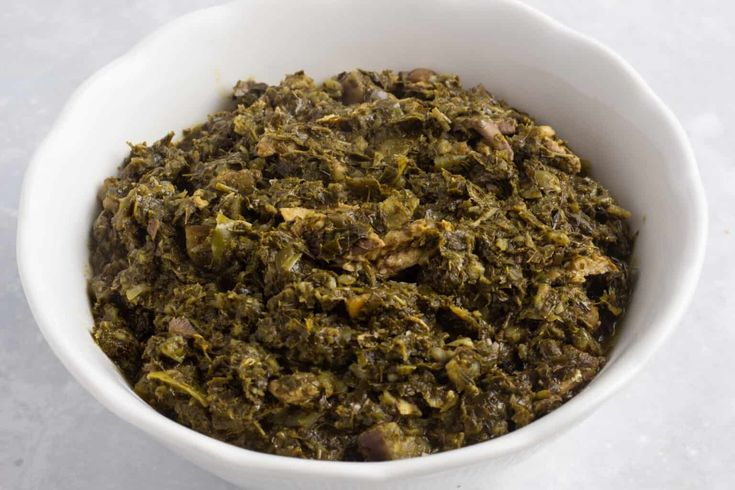
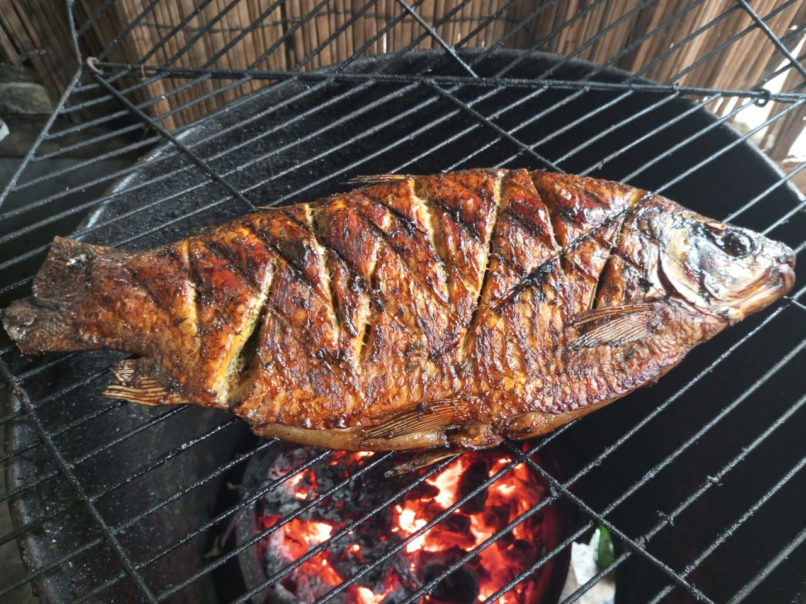
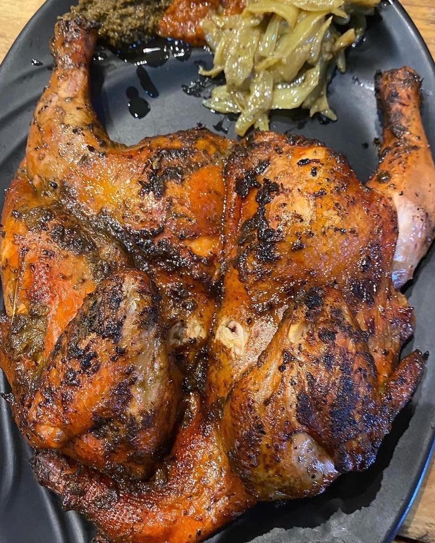

Feuilles de manioc pilées et mijotées selon la tradition congolaise.

Poisson frais délicatement assaisonné et cuisiné avec des épices congolaises.

Poulet mariné aux épices, puis grillé pour une chair tendre et savoureuse.
Des recettes congolaises préparées avec passion.
Pour vos mariages, anniversaires et événements.
Une ambiance familiale et conviviale.
Kinshasa, RDC
+243 835 939 733
joendelo3@gmail.com
Lundi - Samedi
08h00 - 18h00